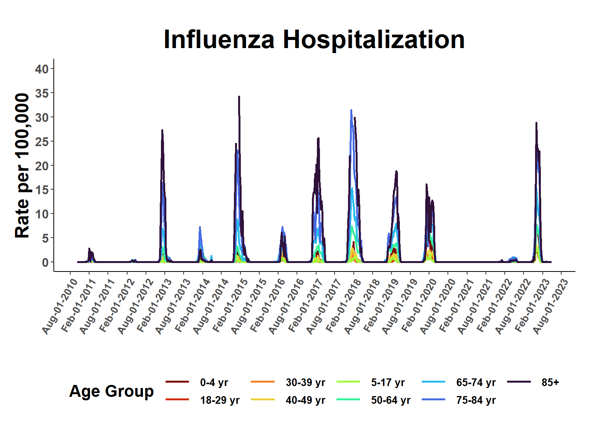
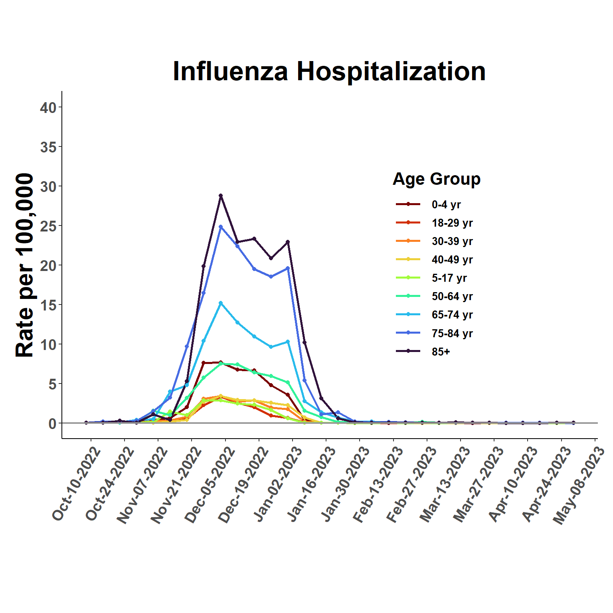
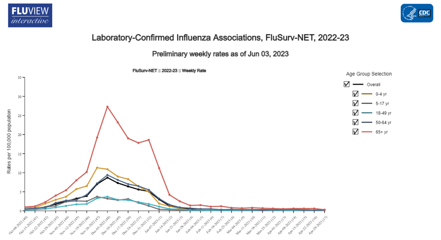
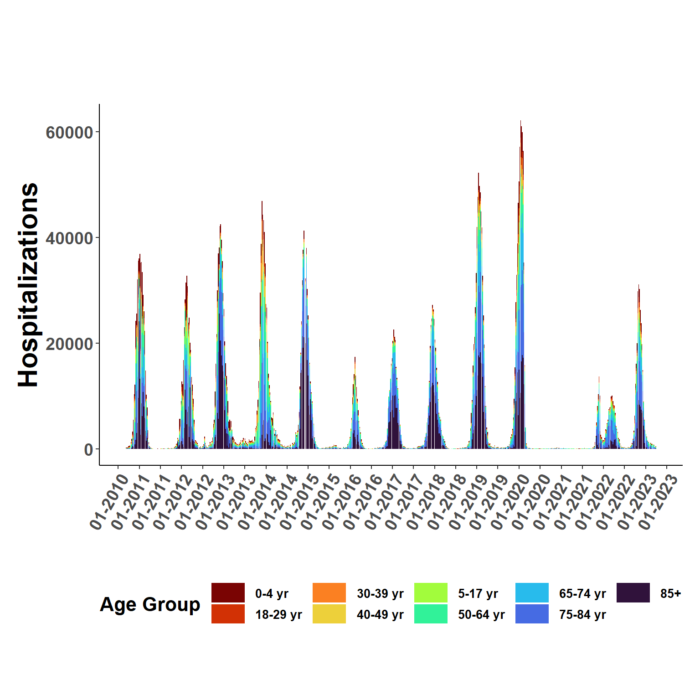
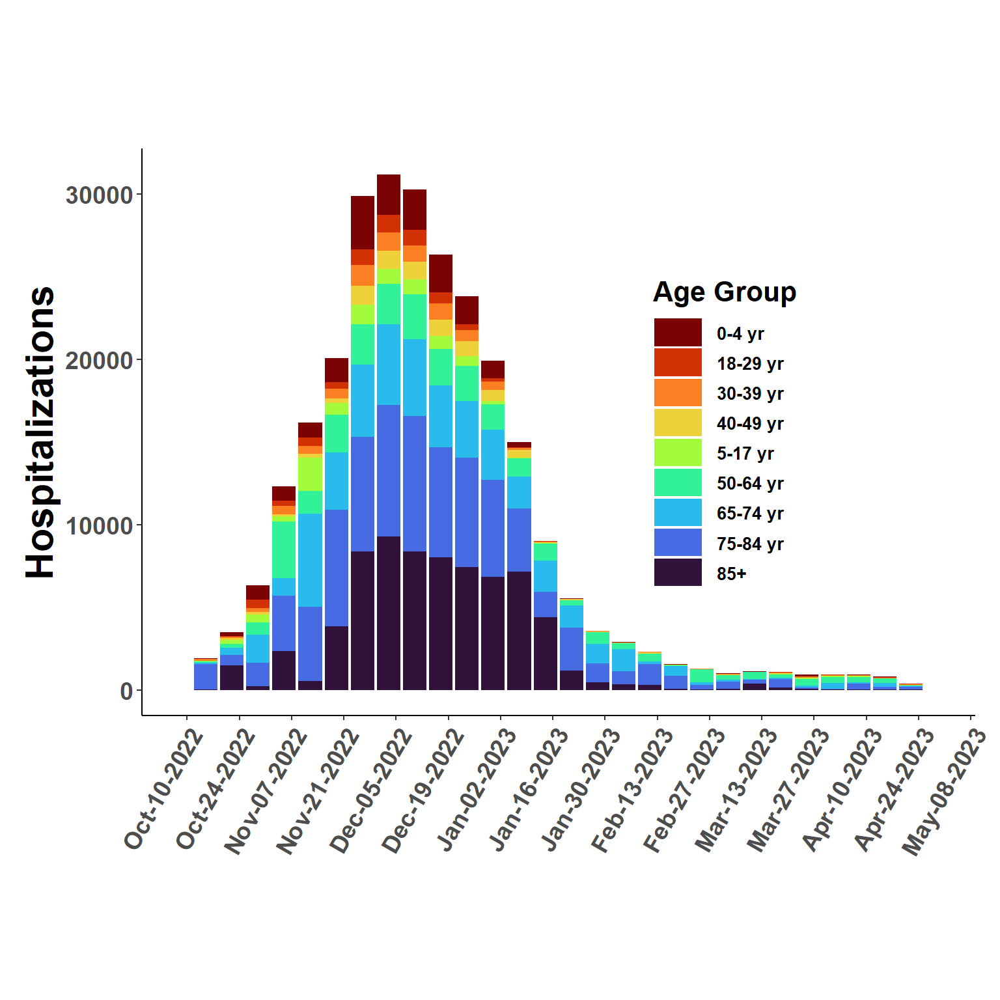

Hide code
#wrangling
library(tidyverse)
library(lubridate)
library(data.table, include.only = "fread")
library(cdcfluview)
#spatial
library(CovidCAR)
#inference
library(INLA)
options(dplyr.summarise.inform = FALSE, show_col_types = FALSE)This analysis utilizes FluSurv data to first estimate weekly and age class specific influenza rates for the period 2010-2023, then second, to apply estimated rates to flusion data to approximate date, location, and age group specific influenza hospitalizations. Because FluSurv only provides data for 18 states, rate modeling includes covariates to account for time and location sampling biases within a time series model.
#wrangling
library(tidyverse)
library(lubridate)
library(data.table, include.only = "fread")
library(cdcfluview)
#spatial
library(CovidCAR)
#inference
library(INLA)
options(dplyr.summarise.inform = FALSE, show_col_types = FALSE)Creating a crosswalk to match FluSurv age groups to those in US Census data. US Census data is used as a random slopes type predictor in the time series model to provide age-specfic offsets.
Note: Census codes were queried using the censusapi package. This work is shown in the non-rendered version of this document in the GitHub repository.
demog_table <- as.data.frame(
cbind(
census_classes = c(1, 6:18, 20, 21, 23),
flsv_classes = c("0-4 yr", "18-29 yr", "30-39 yr", "30-39 yr", "40-49 yr", "40-49 yr", "50-64 yr",
"50-64 yr", "50-64 yr", "65-74 yr", "65-74 yr", "75-84 yr", "75-84 yr", "85+",
"5-17 yr", "5-17 yr", "18-29 yr")
)
)
demog_table| census_classes | flsv_classes |
|---|---|
| 1 | 0-4 yr |
| 6 | 18-29 yr |
| 7 | 30-39 yr |
| 8 | 30-39 yr |
| 9 | 40-49 yr |
| 10 | 40-49 yr |
| 11 | 50-64 yr |
| 12 | 50-64 yr |
| 13 | 50-64 yr |
| 14 | 65-74 yr |
| 15 | 65-74 yr |
| 16 | 75-84 yr |
| 17 | 75-84 yr |
| 18 | 85+ |
| 20 | 5-17 yr |
| 21 | 5-17 yr |
| 23 | 18-29 yr |
The hospitalizations() function from the cdcfluview package does most of the work by querying FluView, but seems only to be able to take small bites at a time.
myRegions <- surveillance_areas()
flusurv <- do.call(rbind, lapply(seq_len(dim(myRegions)[1]), function(i) {
hospitalizations(surveillance_area = myRegions$surveillance_area[i], region = myRegions$region[i])
}))
#save copy
#write.csv(flusurv, "./2033-06-01-data/flusurv_query.csv", row.names = FALSE)
#write.csv(flusurv, "./2033-06-01-data/flusurv_all.csv", row.names = FALSE) #Entire Networkflusurv <- fread("D:/Github/flusion/data/flusurv_all.csv") %>%
filter(age_label %in% unique(demog_table$flsv_classes), #age classes
region != "Entire Network", #states only
year >= 2010 & year <= 2019) %>% #the pkg fails on dates after 2020,ugh
mutate(age_class = age_label,
location_name = region,
network = surveillance_area,
weeklyrate = as.numeric(weeklyrate),
epiweek = year_wk_num) %>%
select(location_name, year, epiweek, network, weeklyrate, age_class)
#manual download from site 2023-06-01
flusurv_2020 <- fread("D:/Github/flusion/data/FluSurveillance_2020.csv") %>%
rename_all(~gsub(" |-", "", .)) %>%
filter(AGECATEGORY %in% unique(demog_table$flsv_classes), #ages to keep
SEXCATEGORY == "Overall", #all sexes
RACECATEGORY == "Overall",
WEEKLYRATE != "null",
CATCHMENT != "Entire Network", #states only
MMWRYEAR >= 2020) %>% #the pkg fails on dates after 2020,ugh
mutate(age_class = AGECATEGORY,
location_name = CATCHMENT,
network = NETWORK,
year = MMWRYEAR,
epiweek = MMWRWEEK,
rate = CUMULATIVERATE,
weeklyrate = as.numeric(WEEKLYRATE)) %>%
select(location_name, year, epiweek, network, weeklyrate, age_class)
#Join date ranges
flusurv = rbind(flusurv, flusurv_2020)
flusurv$weeklyrate.s <- log(flusurv$weeklyrate + 0.0001)
flusurv$location_name[flusurv$location_name == "New York - Albany"] = "New York"
flusurv$location_name[flusurv$location_name == "New York - Rochester"] ="New York"
flusurv <- as.data.frame(
flusurv %>%
group_by(location_name, year, epiweek, age_class) %>%
summarise(weeklyrate = mean(weeklyrate, na.rm=T),
weeklyrate.s = mean(weeklyrate.s, na.rm=T))
)
unique(duplicated(flusurv))[1] FALSEhead(flusurv)| location_name | year | epiweek | age_class | weeklyrate | weeklyrate.s |
|---|---|---|---|---|---|
| California | 2010 | 1 | 0-4 yr | 0.5 | -0.6929472 |
| California | 2010 | 1 | 18-29 yr | 0.3 | -1.4972664 |
| California | 2010 | 1 | 30-39 yr | 0.4 | -0.9160408 |
| California | 2010 | 1 | 40-49 yr | 0.0 | -9.2103404 |
| California | 2010 | 1 | 5-17 yr | 0.2 | -1.6089380 |
| California | 2010 | 1 | 50-64 yr | 0.5 | -0.6929472 |
US population estimates by state and age group from the U.S. Census Bureau
all_pop <- censusapi::getCensus(key = get_api("censusapi"),
name = "pep/charagegroups",
vars = c('AGEGROUP','POP'),
vintage = "2018",
region = "state:*") %>%
filter(AGEGROUP %in% unique(demog_table$census_classes)) %>%
mutate(location = state,
pop_age = POP,
census_classes = AGEGROUP) %>%
select(-c(state, AGEGROUP, POP))
all_pop$age_class <- with(demog_table,
flsv_classes[match(
all_pop$census_classes,
census_classes)])
all_pop <- as.data.frame(
all_pop %>%
group_by(location, age_class) %>%
summarise(pop_age = sum(pop_age))
)State FIPS numbers to match Census and FluSurv data. This file was created during Preprocessing.
locations <- fread("D:/Github/flusion/data/locations.csv") %>%
select(-c(count_rate1per100k, count_rate2per100k)) %>%
filter(location_name != "US") #Match FIPS to data.
all_pop <- left_join(all_pop, locations, by = "location") %>%
filter(location_name %in% unique(flusurv$location_name))
unique(duplicated(flusurv[,c("location_name", "age_class", "epiweek","year")]))[1] FALSEcomb_data <- left_join(flusurv, all_pop, by = c("location_name", "age_class"))
#date
comb_data$date <- MMWRweek::MMWRweek2Date(comb_data$year, comb_data$epiweek, 7)FluSurv reports are not available for many dates within the analysis period, partculary outside of the primary flu season. Because the goal is to estimate continuous rate variation, a data frame is created listing all dates is created.
Need current date range in flusion data so that results here can be later matched. Flusion_v1 does not include age structure.
#function to downlaod file
get_data <- function(url) {
df <- read_csv(url)
return(df)
}
flusion_url <- "https://github.com/JMHumphreys/flusion/raw/main/flusion/flusion_v1.csv"
flusion <- get_data(flusion_url)
head(flusion)| date | year | epiweek | abbreviation | location | location_name | q_0.025 | q_0.25 | q_0.50 | q_0.75 | q_0.975 |
|---|---|---|---|---|---|---|---|---|---|---|
| 2010-10-09 | 2010 | 40 | AL | 01 | Alabama | 0.13 | 0.43 | 0.80 | 1.48 | 4.83 |
| 2010-10-09 | 2010 | 40 | AK | 02 | Alaska | 0.04 | 0.14 | 0.26 | 0.48 | 1.58 |
| 2010-10-09 | 2010 | 40 | AZ | 04 | Arizona | 2.68 | 8.71 | 16.12 | 29.72 | 93.15 |
| 2010-10-09 | 2010 | 40 | AR | 05 | Arkansas | 0.08 | 0.25 | 0.47 | 0.87 | 2.82 |
| 2010-10-09 | 2010 | 40 | CA | 06 | California | 1.81 | 5.89 | 10.93 | 20.24 | 64.55 |
| 2010-10-09 | 2010 | 40 | CO | 08 | Colorado | 1.12 | 3.65 | 6.77 | 12.55 | 40.19 |
Create a date vector to capture the entire date range for each age class.
min_date <- min(flusion$date) #flusion date
max_date <- max(comb_data$date) #FluSurv date
date_range <- seq(min_date, max_date, by = "1 week")
comb_data <- comb_data %>%
filter(date >= min_date & date <= max_date)
flusion_cut <- flusion %>%
filter(date >= min_date & date <= max_date)
date_age_tab = as.data.frame(rep(unique(demog_table$flsv_classes), length(date_range)))
names(date_age_tab) = "age_class"
date_age_tab$date <- rep(unique(date_range), length(unique(demog_table$flsv_classes)))
grid_expand <- left_join(date_age_tab, comb_data, by = c("date", "age_class"))
grid_expand$location_name = ifelse(is.na(grid_expand$location_name) == TRUE, "unknown", grid_expand$location_name)
#FluSurv values were transformed to log scale
grid_expand$weeklyrate.s <- ifelse(is.na(grid_expand$weeklyrate.s), log(0.0001), grid_expand$weeklyrate.s)Verifying that all variables needed for modeling are present.
grid_expand <- grid_expand %>%
mutate(intercept = 1,
ts_weeks.1 = as.integer(as.factor(date)),
ts_weeks.2 = ts_weeks.1,
region.1 = as.integer(as.factor(location_name)),
class.1 = as.integer(as.factor(age_class)),
class.2 = class.1,
class.3 = class.1,
year = year(date),
year.int = as.integer(as.factor(year)),
l_age_pop = pop_age/10^5)
# find average population across FluSurv's 18 states
pop_state_age <- comb_data %>%
group_by(age_class) %>%
summarise(mean_age_pop = mean(pop_age)/10^5) #rate/100k
grid_expand <- left_join(grid_expand, pop_state_age, by = c("age_class"))
grid_expand$l_age_pop <- ifelse(grid_expand$location_name == "unknown", grid_expand$mean_age_pop, grid_expand$l_age_pop)#prior
pc.prior = list(prec = list(prior="pc.prec", #prior
param = c(1, 0.5)))
#formula
form_age <- weeklyrate.s ~ -1 + #log-rate per 100k
f(ts_weeks.1, #time series model
constr=TRUE, #rw models perform well also
model="iid", #iid more conservative
group = class.1, #age group specific
control.group=list(model="iid"),
hyper= pc.prior) +
f(class.2, #random intercepts for age-specific means
constr=TRUE,
model="iid",
hyper=pc.prior) +
f(class.3, l_age_pop, #~random slopes for pop
constr=TRUE,
model="iid",
hyper=pc.prior) +
f(region.1, #region level variation
constr=TRUE,
model="iid",
group = year.int, #year level variation
control.group=list(model="iid"),
hyper=pc.prior)
#run model
age.mod = inla(form_age, #formula
data = grid_expand, #data
family = c("gaussian"), #negative binomial
verbose = FALSE,
quantiles = c(0.025, 0.25, 0.5, 0.75, 0.975),
control.fixed = list(prec = 1,
prec.intercept = 1),
control.predictor = list(
compute = TRUE,
link = 1),
control.inla = list(strategy = "gaussian",
int.strategy = "eb"),
control.compute=list(dic = F, cpo = F, waic = F, config=F))
#extract and scale results
fitted_rates <- age.mod$summary.fitted.values[,3:7]
names(fitted_rates) <- c("q0.025", "q0.25","q0.5","q0.75","q0.975")
fitted_rates <- apply(fitted_rates, 2, exp)View period of record rates.
esti_rates <- cbind(grid_expand, fitted_rates)
esti_rates <- esti_rates %>%
group_by(date, age_class) %>%
summarise(q0.025 = median(q0.025),
q0.25 = median(q0.25),
q0.5 = median(q0.5),
q0.75 = median(q0.75),
q0.975 = median(q0.975))
ggplot(esti_rates, aes(date, q0.5, group=age_class, col=age_class), fill=age_class) +
geom_line(linewidth = 1) +
viridis::scale_color_viridis("Age Group",
discrete=T,
option = "turbo",
direction = -1,
na.value = "white") +
scale_x_date(date_breaks = "6 month", date_labels = "%b-%d-%Y") +
scale_y_continuous(breaks = scales::pretty_breaks(8), limits = c(0, 40)) +
xlab(" ") +
ylab("Rate per 100,000") +
ggtitle("Influenza Hospitalization") +
theme_classic() +
theme(plot.margin = unit(c(1,0.5,1,0.5), "cm"),
panel.grid.minor = element_blank(),
panel.grid.major = element_blank(),
panel.background = element_blank(),
plot.background = element_blank(),
panel.border = element_blank(),
legend.title = element_text(size = 16, face = "bold", hjust=0.5),
legend.text = element_text(size=10, face="bold"),
strip.text = element_text(size=16, face="bold"),
strip.background = element_blank(),
legend.position = "bottom",
legend.direction = "horizontal",
legend.key.width = unit(2,"line"),
axis.text.y = element_text(face="bold", size=12),
axis.text.x = element_text(face="bold", size=10, angle = 60, hjust=1),
axis.title.x = element_text(size=18, face="bold"),
axis.title.y = element_text(size=18, face="bold"),
plot.title = element_text(size=25, face="bold", hjust=0.5)) 
Zoom in to view most recent season. Snapshot for same period provided by FluSurv is below for comparison.
xmin = as_date("2022-10-08")
xmax = as_date("2023-04-29")
ggplot(esti_rates, aes(date, q0.5, group=age_class, col=age_class), fill=age_class) +
geom_line(linewidth = 1) +
geom_point(size=1.5, pch=19) +
geom_hline(yintercept = 0,
linetype = "solid",
colour = "gray60",
linewidth = 0.75) +
viridis::scale_color_viridis("Age Group",
discrete=T,
option = "turbo",
direction = -1,
na.value = "white") +
scale_x_date(date_breaks = "2 week", date_labels = "%b-%d-%Y", limits = c(xmin,xmax)) +
scale_y_continuous(breaks = scales::pretty_breaks(8), limits = c(0, 40)) +
xlab(" ") +
ylab("Rate per 100,000") +
ggtitle("Influenza Hospitalization") +
theme_classic() +
theme(plot.margin = unit(c(2,0.5,2,0.5), "cm"),
panel.grid.minor = element_blank(),
panel.grid.major = element_blank(),
panel.background = element_blank(),
plot.background = element_blank(),
panel.border = element_blank(),
legend.title = element_text(size = 16, face = "bold", hjust=0.5),
legend.text = element_text(size=10, face="bold"),
strip.text = element_text(size=16, face="bold"),
strip.background = element_blank(),
legend.position = c(0.7, 0.5),
legend.direction = "vertical",
legend.key.width = unit(2,"line"),
axis.text.y = element_text(face="bold", size=14),
axis.text.x = element_text(face="bold", size=14, angle = 60, hjust=1),
axis.title.x = element_text(size=22, face="bold"),
axis.title.y = element_text(size=22, face="bold"),
plot.title = element_text(size=25, face="bold", hjust=0.5)) Warning: Removed 5634 rows containing missing values (`geom_line()`).Warning: Removed 5634 rows containing missing values (`geom_point()`).
Compare the estimated values to those on FluSurv 
Apply rates estimated above to total incidence estimated by flusion data.
Function to apply rates (proportionally) and then join data sets.
# function
# flusion data (flus_data) and estimated rates (rate_est) as inputs
naive_stratify <- function(flus_data, rate_est){
#date range for analysis
min_date <- min(flus_data$date) #flusion date
max_date <- max(rate_est$date) #FluSurv date
#age groups
age_grps <- unique(rate_est$age_class)
# join flusion and rate estimates
for(i in 1:length(age_grps)){
tmp.fuse = flus_data %>%
filter(date >= min_date & date <= max_date) %>%
mutate(age_class = age_grps[i])
rate_est = rate_est %>%
filter(date >= min_date & date <= max_date)
tmp.fuse = left_join(tmp.fuse, rate_est, by = c("date", "age_class"))
if(i == 1){
work_flus <- tmp.fuse
} else{work_flus <- rbind(work_flus, tmp.fuse)}
}
#summed rate by date and location (all age groups)
fuse_weights <- work_flus %>% #national weekly sum
group_by(date, location_name) %>%
summarise(s0.025 = sum(q0.025),
s0.25 = sum(q0.25),
s0.5 = sum(q0.5),
s0.75 = sum(q0.75),
s0.975 = sum(q0.975))
# join to data
work_flus <- left_join(work_flus, fuse_weights, by=c("date", "location_name"))
# calculate proportions and multiply by flusion estimates
prop_set <- work_flus %>%
group_by(date, location_name, age_class) %>%
mutate(n0.025 = q0.025/s0.025,
n0.25 = q0.25/s0.25,
n0.50 = q0.5/s0.5,
n0.75 = q0.75/s0.75,
n0.975 = q0.975/s0.975,
q_0.025 = q_0.025*n0.025,
q_0.25 = q_0.25*n0.25,
q_0.50 = q_0.50*n0.50,
q_0.75 = q_0.75*n0.75,
q_0.975 = q_0.975*n0.975) %>% #select rows to match with flusion
select(date, year,epiweek, abbreviation, location, location_name, age_class, q_0.025, q_0.25, q_0.50, q_0.75, q_0.975)
}Execute function
flused_ages <- naive_stratify(flusion, esti_rates)ggplot(flused_ages, aes(date, q_0.50, fill=age_class), col = "transparent") +
geom_bar(position="stack", stat="identity") +
viridis::scale_fill_viridis("Age Group",
discrete=T,
option = "turbo",
direction = -1,
na.value = "white") +
scale_x_date(date_breaks = "6 month", date_labels = "%d-%Y") +
xlab(" ") +
ylab("Hospitalizations") +
ggtitle(" ") +
theme_classic() +
theme(plot.margin = unit(c(2,0.5,2,0.5), "cm"),
panel.grid.minor = element_blank(),
panel.grid.major = element_blank(),
panel.background = element_blank(),
plot.background = element_blank(),
panel.border = element_blank(),
legend.title = element_text(size = 16, face = "bold", hjust=0.5),
legend.text = element_text(size=10, face="bold"),
strip.text = element_text(size=16, face="bold"),
strip.background = element_blank(),
legend.position = "bottom",
legend.direction = "horizontal",
legend.key.width = unit(2,"line"),
axis.text.y = element_text(face="bold", size=14),
axis.text.x = element_text(face="bold", size=14, angle = 60, hjust=1),
axis.title.x = element_text(size=22, face="bold"),
axis.title.y = element_text(size=22, face="bold"),
plot.title = element_text(size=25, face="bold", hjust=0.5)) 
ggplot(flused_ages, aes(date, q_0.50, fill=age_class), col = "transparent") +
geom_bar(position="stack", stat="identity") +
viridis::scale_fill_viridis("Age Group",
discrete=T,
option = "turbo",
direction = -1,
na.value = "white") +
scale_x_date(date_breaks = "2 week", date_labels = "%b-%d-%Y", limits = c(xmin,xmax)) +
xlab(" ") +
ylab("Hospitalizations") +
ggtitle(" ") +
theme_classic() +
theme(plot.margin = unit(c(2,0.5,2,0.5), "cm"),
panel.grid.minor = element_blank(),
panel.grid.major = element_blank(),
panel.background = element_blank(),
plot.background = element_blank(),
panel.border = element_blank(),
legend.title = element_text(size = 16, face = "bold", hjust=0.5),
legend.text = element_text(size=10, face="bold"),
strip.text = element_text(size=16, face="bold"),
strip.background = element_blank(),
legend.position = c(0.7, 0.5),
legend.direction = "vertical",
legend.key.width = unit(2,"line"),
axis.text.y = element_text(face="bold", size=14),
axis.text.x = element_text(face="bold", size=14, angle = 60, hjust=1),
axis.title.x = element_text(size=22, face="bold"),
axis.title.y = element_text(size=22, face="bold"),
plot.title = element_text(size=25, face="bold", hjust=0.5)) 